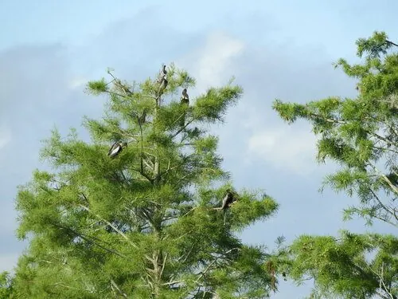

乔木 · 植物界
池杉 Taxodium ascendens

原产北美的落叶针叶树，耐水湿，针叶紧贴小枝呈钻形，秋季红褐，是湿地造林与水岸绿化的常用树种。
- 分类
- 门裸子植物门纲松柏纲目松柏目科柏科属落羽杉属
- 栖息环境
- 海拔 500 米以下的沼泽、河岸与低洼湿地，极耐水湿
- 地理分布
- 原产北美洲东南部，中国长江流域及以南地区广泛引种
- 保护级别
- 暂无评估；中国未列入国家重点保护野生植物名录
物种志
池杉为落叶针叶乔木，高可达 25 m，树干通直，基部膨大；树皮红褐色、呈条片状剥落。叶片钻形、紧贴小枝生长，在小枝上螺旋状排列，秋季转为红褐色，冬季与小枝一同脱落；雌雄同株，球果圆形或卵圆形，成熟时褐色，种子具棱。
池杉原产北美洲东南部，多生于沼泽与河岸湿地，耐水湿、耐涝，在水中可长出膝状呼吸根，中国长江流域及以南地区广泛引种，常用于水岸防护、湿地造林与公园景观。木材轻软、耐腐，可供建筑与家具用；树形挺拔，秋季叶色红褐，是优良的水岸景观树种。池杉与落羽杉外形相似，但池杉的叶片紧贴小枝、呈钻形，落羽杉的叶片扁平、排成两列。
形态与习性
- 株高可达 25 m，树干基部膨大
- 花期3–4 月，雌雄同株
- 球果成熟10 月，圆形或卵圆形
- 光照喜光，不耐长期荫蔽
- 水分极耐水湿，可生于浅水中
- 主要用途湿地造林、水岸绿化、建筑用材
趣味知识
- 池杉的叶片紧贴小枝、呈钻形，与叶片扁平排成两列的落羽杉容易区分。
- 池杉耐水湿，生于水中时会长出膝状呼吸根帮助呼吸。
- 池杉秋季叶色转为红褐色，是湿地公园里常见的秋景树。